VTeles là phần mềm đa nền tảng,
hỗ trợ quản lý và thực hiện công việc Telesale một cách hiệu quả hơn.
hỗ trợ quản lý và thực hiện công việc Telesale một cách hiệu quả hơn.
Cảm ơn bạn đã sử dụng VTeles
Chọn và tải link tương ứng với thiết bị của bạn


VTeles hỗ trợ các nền tảng điện thoại và máy tính.
Tuy nhiên để tiện cho việc sử dụng, khuyên dùng các phiên bản điện thoại.
Tuy nhiên để tiện cho việc sử dụng, khuyên dùng các phiên bản điện thoại.
Phiên bản máy tính sẽ hoạt động nặng nề và làm máy tính bị chậm,
Do đó chỉ nên sử dụng để tải data số điện thoại.
Do đó chỉ nên sử dụng để tải data số điện thoại.
1. Các phân cấp và vai trò trong hệ thống VTeles
Mỗi người dùng trong hệ thống được định danh bằng 1 tài khoản duy nhất
Tuân theo quy tắc phân quyền, hoạt động dưới quyền quản lý của cấp trên trực tiếp.
Tùy vào phân quyền, người dùng sẽ có chức năng riêng trong hệ thống.
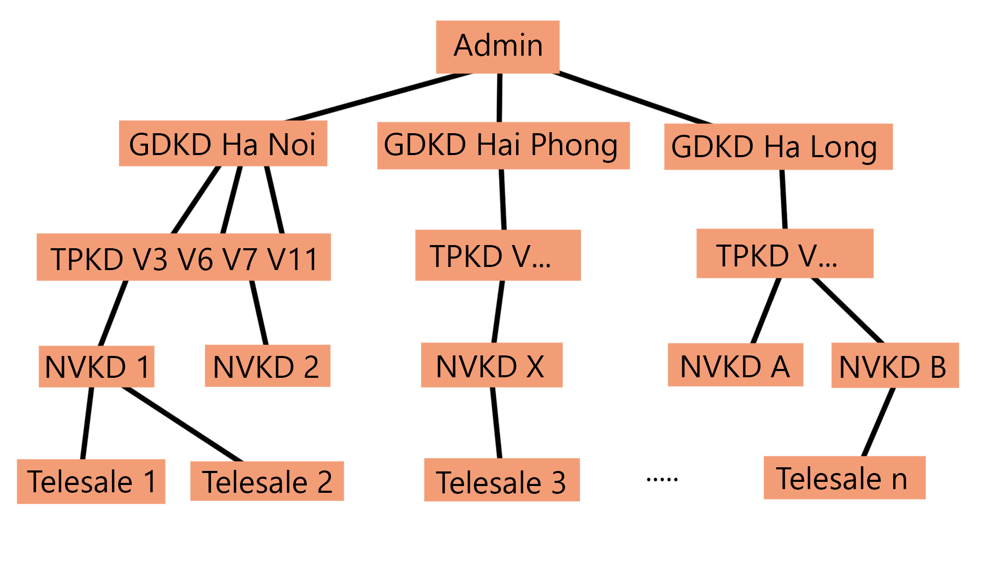
Tuân theo quy tắc phân quyền, hoạt động dưới quyền quản lý của cấp trên trực tiếp.
Tùy vào phân quyền, người dùng sẽ có chức năng riêng trong hệ thống.
- Admin : giám sát và điều hành hoạt động hệ thống.
- Ban Giám Đốc, Kế toán, Hành chính : theo dõi hoạt động telesale của công ty.
- TPKD : tạo tài khoản cho NVKD, theo dõi hoạt động telesale của phòng mình.
- NVKD : tạo tài khoản cho telesale dưới quyền, quản lý data, theo dõi hoạt động telesale của phòng mình.
- Telesale : gọi điện, báo cáo kết quả.
- Ban Giám Đốc, Kế toán, Hành chính : theo dõi hoạt động telesale của công ty.
- TPKD : tạo tài khoản cho NVKD, theo dõi hoạt động telesale của phòng mình.
- NVKD : tạo tài khoản cho telesale dưới quyền, quản lý data, theo dõi hoạt động telesale của phòng mình.
- Telesale : gọi điện, báo cáo kết quả.
Các hướng dẫn tiếp sẽ chỉ tập trung vào NVKD do các thao tác quản lý chủ yếu nằm ở NVKD.
2. Tạo và quản lý Telesale
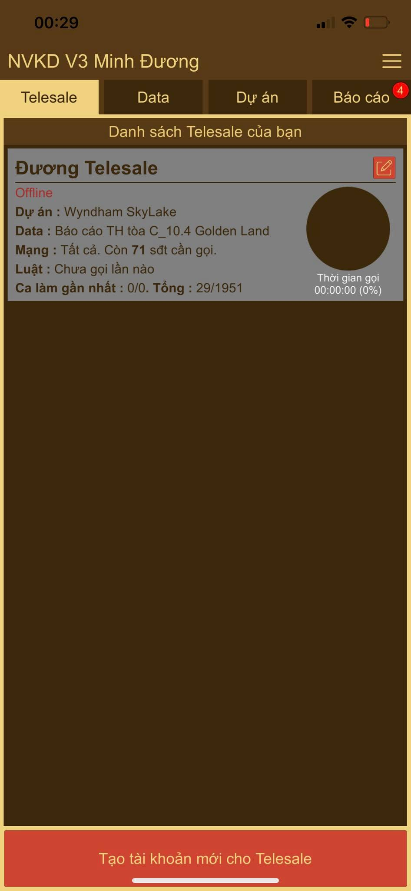
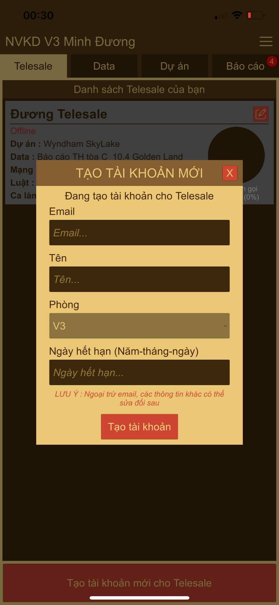
3. Tạo và quản lý Data
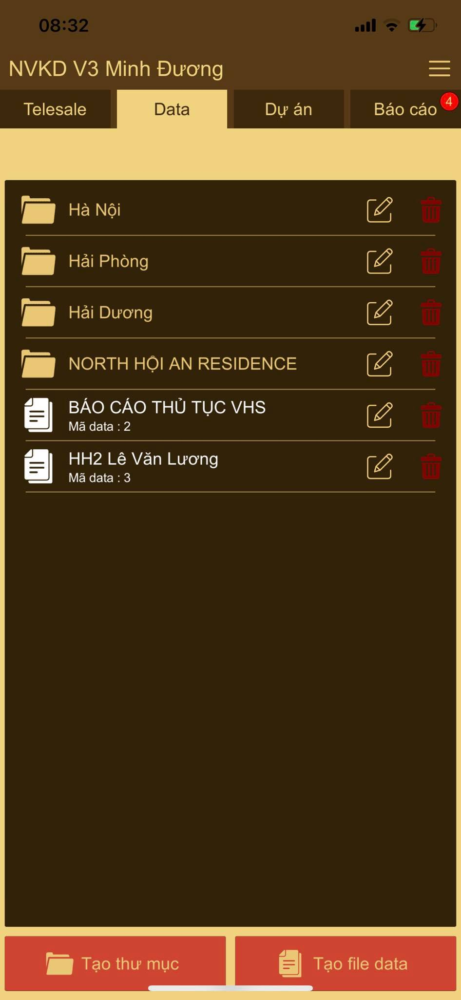
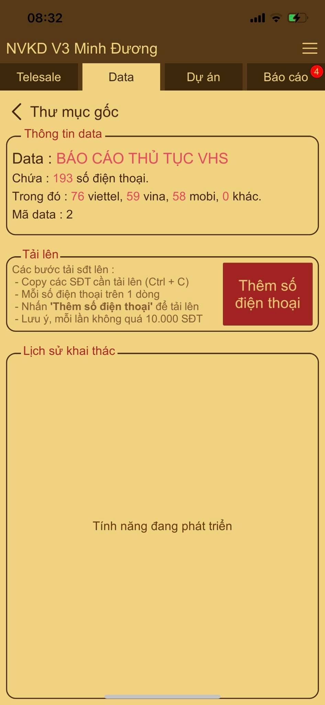
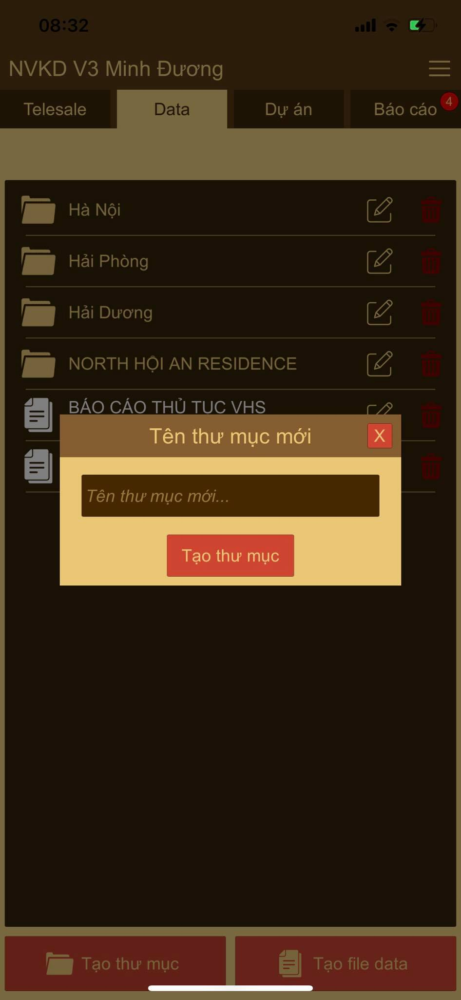
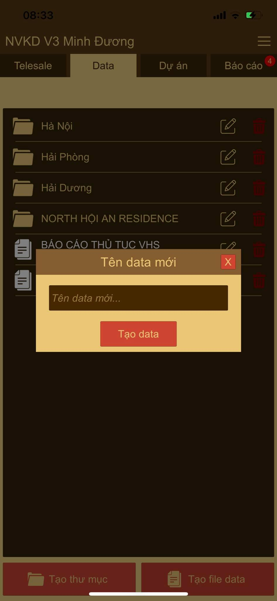
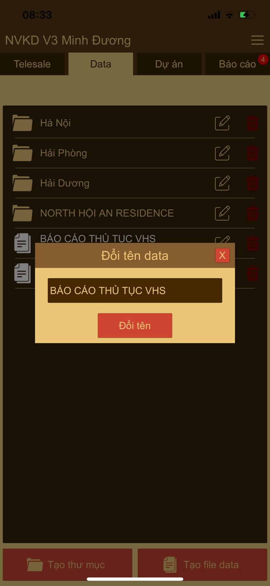
4. Tạo và quản lý Dự án
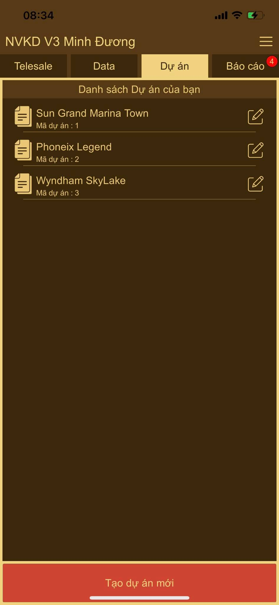
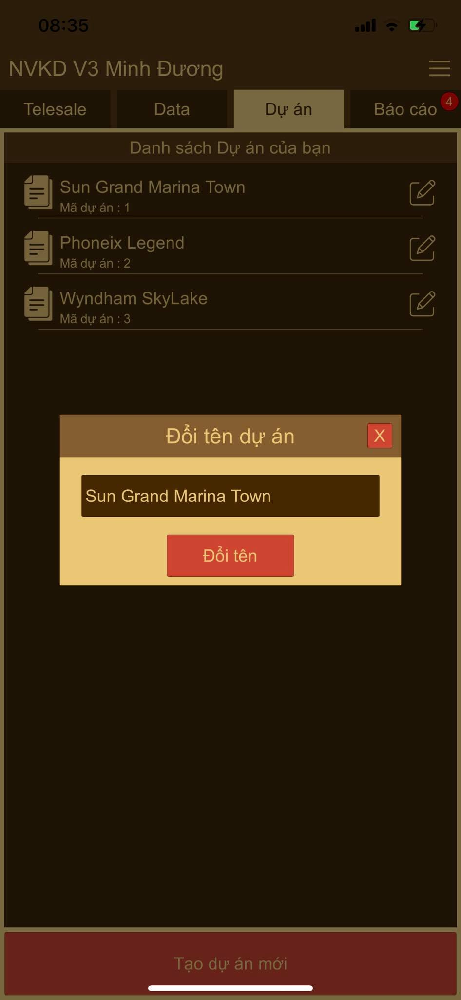
5. Điều chỉnh data cho Telesale
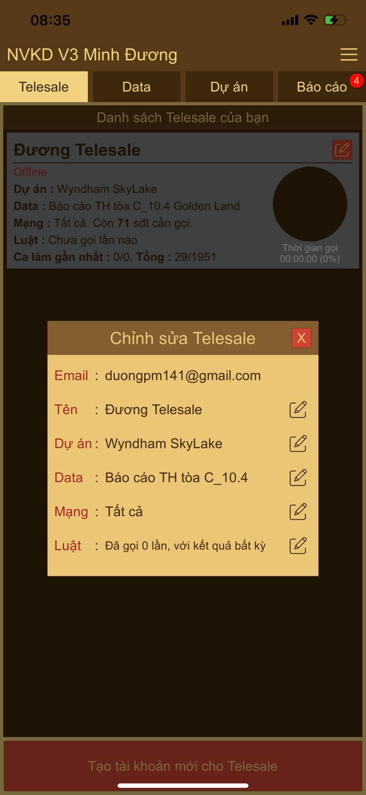
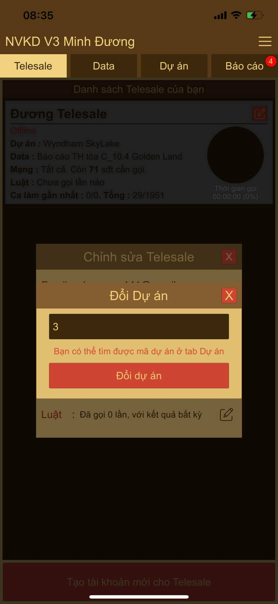
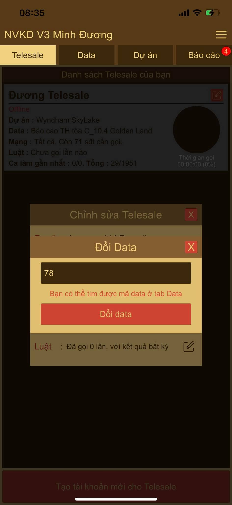
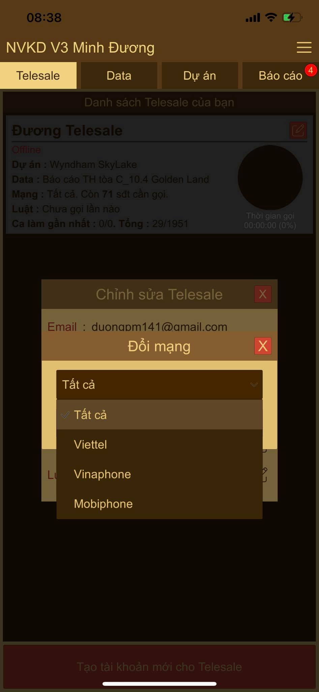
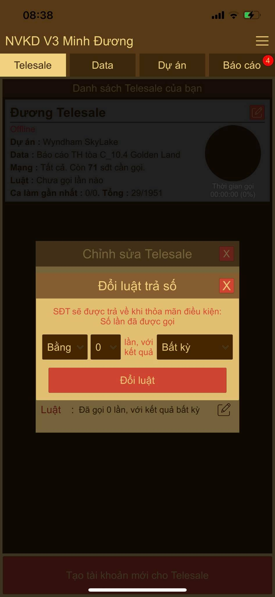
6. Quản lý Báo cáo
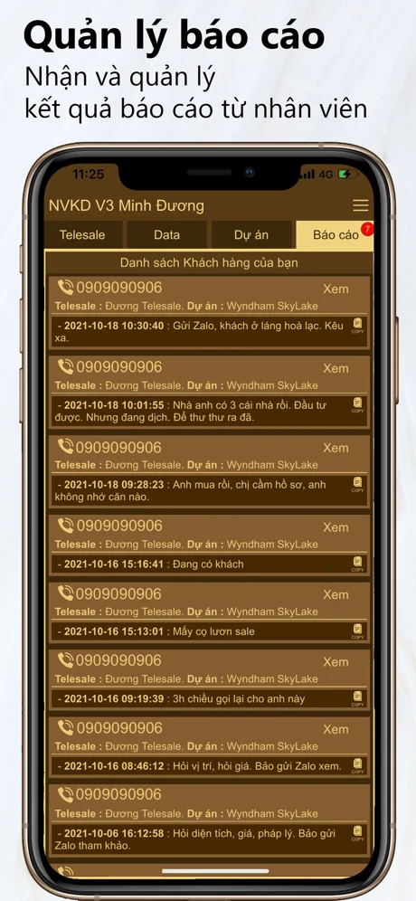
Các hướng dẫn cho Telesale
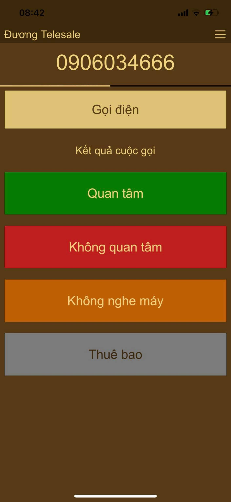
Các hướng dẫn cho TPKD
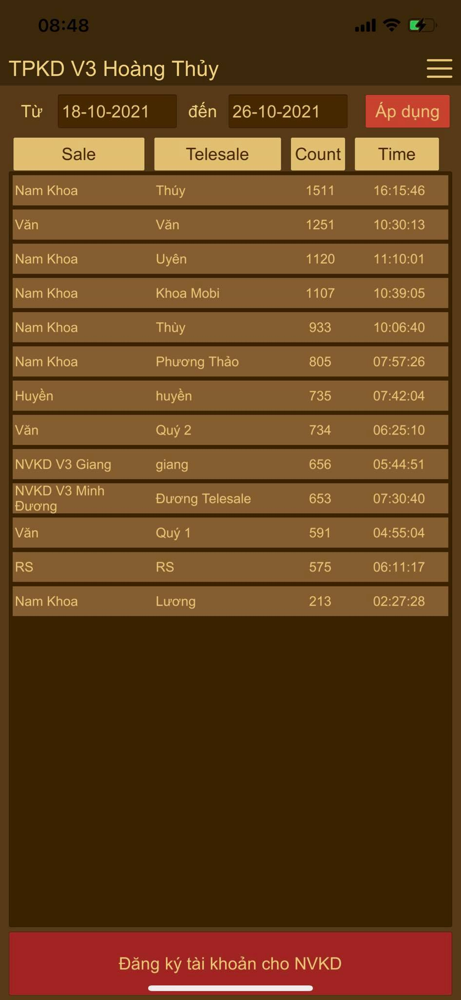
VTeles hiện vẫn đang trong quá trình phát triển.
Nếu có góp ý hoặc gặp phải lỗi trong quá trình sử dụng, vui lòng liên hệ.
Zalo : 0856130195
Nếu có góp ý hoặc gặp phải lỗi trong quá trình sử dụng, vui lòng liên hệ.
Zalo : 0856130195